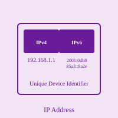

IP Address

An IP Address (Internet Protocol Address) is a unique numerical address assigned to every machine connected to the Internet or a computer network. Just as physical mail requires a street address to be delivered to the correct location, data on the Internet requires an IP address to reach the correct destination device. IP addresses are essential for network communication, allowing devices to locate and communicate with each other across the global Internet infrastructure.
There are two main versions of IP addresses currently in use: IPv4 (Internet Protocol version 4) and IPv6 (Internet Protocol version 6). IPv4 addresses are composed of four octets separated by periods, such as 192.168.1.1, and can represent approximately 4.3 billion unique addresses. Due to the explosive growth of Internet-connected devices, the supply of IPv4 addresses has become depleted, leading to the development and gradual adoption of IPv6. IPv6 addresses are much longer, using 128-bit addresses represented in hexadecimal notation, such as 2001:0db8:85a3::8a2e:0370:7334, allowing for an astronomically larger number of unique addresses to accommodate future growth.
IP addresses serve two primary functions in network communication. First, they identify a device on the network, and second, they help locate that device so data can be routed to it. Every time you browse the web, send an email, or use any Internet service, your device uses its IP address to communicate with other devices and servers. ISPs (Internet Service Providers) assign IP addresses to users, and within local networks, devices are assigned IP addresses through DHCP (Dynamic Host Configuration Protocol) or manual static assignment. Understanding IP addresses is fundamental to understanding how the Internet works and how devices communicate across networks.